The HD fighter, step by step
In Baldur's Gate II, players choose their character's colours: the hero's image is therefore not a finished picture but a paint-by-numbers that the game fills in live. How can it gain the finesse of an HD image without breaking that paint-by-numbers? Three artificial intelligences investigated, then reviewed and corrected one another. Here is their final study, explained for any curious reader, without leaving out any of the technical content.
- 3 AIs · 4 stages2 studies, 2 cross-reviews, 1 synthesis, 1 final review
- 774 BAManimation files inventoried · 870 items (ITM)
- 628 BAMuseful scope identified in the study
- 12recolouring variants tested
- −18% / −23%historical E3b/E5 results · Q8 against Q0
- x2 + BOXselected after in-game trials
Paint-by-numbers, not a picture
Before the method and the numbers: what is this about, why is it hard, and what was found? The rest of the page details this summary.
The game. Baldur's Gate II: Enhanced Edition (BG2EE) is a role-playing game seen from above. Its characters are small animated images called sprites: the fighter studied here is about sixty pixels tall. On a modern screen, each of those pixels becomes a clearly visible square. The BG2 HD project redraws them more finely, with two (x2) or four (x4) times as many pixels in each direction, without changing their size on screen.
The difficulty. Players choose their character’s colours (hair, skin, two clothing colours), and each piece of equipment brings its own. Every sprite pixel carries a number meaning “this material, this shade”. The BAM also contains a palette, but for these recolourable characters the engine computes the displayed colours at draw time. It is paint-by-numbers, filled on every frame with the current colours. One image serves every fighter; each native range only has 12 shades, from lightest to darkest.
Why a nice upscale is not enough. A neural network can enlarge an image beautifully: it invents volumes and smooth gradients. But what it returns is a finished picture, painted for a single set of colours. To keep it recolourable, it has to be converted back into paint-by-numbers, and that is where everything happens. Twelve shades were enough for a small sprite; in HD, they cut gradients into bands, and a choice of numbers that is perfect under one set of colours leaves fringes under another.
The goal of the study. Find a way to give sprites the modelling of an HD upscale while letting the game colour them itself, whatever colours the player picks, and pin down a recipe precise enough to be programmed.
Why “0x6110”? It is the number the game gives to the “human female fighter” animation (written in hexadecimal, hence the “0x”). She serves as a textbook case: what holds for her will hold for the 78 character animations built on the same principle.
Before, after
Drag the divider. Left: the original image, enlarged without retouching. Right: the E3b Q3m x4 prototype, an off-game preview retained to explain the study. This is not the newer K6 x2 result. Plate-armour body, helmet, shield and sword, idle, facing south. The K6 plate and in-game video provide the later comparisons.
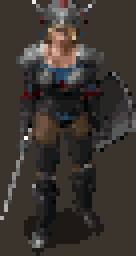
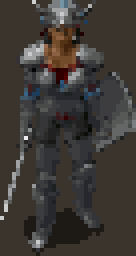
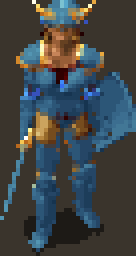
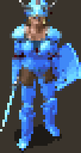
The limit comes from the game
The image file could address 256 colours. It is the engine that only prepares 12 per material, and it recomputes them on every frame: there is no way to add any without touching the whole game.
The network depends on colours
Show it the same fighter in other colours and it no longer draws the same shadows: 20 to 44% of the numbers change. A recipe tuned under a single set of colours cannot suit them all.
Eighths are enough
With 8 positions between two shades, a range goes from 12 to 89 possible tones. The error against the network's drawing drops by 14% on new colours, and the body's “crawling” in animation falls from 14.1% to 5.7%.
Nothing is settled without the game
The first numbers were measured off-game against a network-generated target. Later trials showed Q3m in the game and led to x2 + BOX. A fidelity metric still cannot decide what looks beautiful: visual judgement belongs to the project author, within the tested scope.
Three cards per section
The goal, the research, the finding: enough to grasp each step without reading everything. The “In plain words” lines rephrase the technical passages.
Proof labels
confirmed measured open chosen rejected
Each statement says where its certainty comes from. The scale is explained in section 02.
The technical content stays whole
Addresses, formulas and file names appear in small print; jargon links to the glossary. Sections 01 to 17 carry the same numbers as the technical presentation (in French).
Three AIs, four stages
The study was not written in one go by a single model. It was run like an adversarial expert review: two investigators who do not talk to each other, then review each other; a third who merges; and a final check against the evidence.
Produce a study you can trust without taking it on faith: every important claim must have been found twice, or checked by someone other than its author.
The same brief given to two models from two different companies, each in its own tool, working on the same game and project files. Then cross-reviews, a synthesis by a third model, and a final review.
Without reading each other, the two investigators reached the same architecture: the strongest signal in the whole file. And every review found errors, including a calculation mistake that skewed a measurement.
Claude Opus 5.5
Works in the Claude Code tool, with access to the game files and the project code. One of the two initial studies, one cross-review, then the final review.
In the files: labelled “Claude”, “ClaudeCode”.GPT 6-Astra
Works in the Codex tool, with the same access. The other initial study, then its cross-review, titled “critical comparison”.
In the files: labelled “Codex”.5.6 SOL
Wrote neither of the two studies. Its role: merge them into one, keeping the best of each.
In the files: the “ultimate guide”, filed under the label “Codex synthesis”.The project author
Gives the brief, passes the studies from one model to the other at the right moment, and remains the only judge of what looks good in game. No model read the other's work before being allowed to.
Independent study
Three experiments, ten recolouring methods compared. Proposes sub-shades tuned on several palettes.
Independent study
Reads the game's program, inventories every file, computes four upscales. Shows that the network depends on colours.
Cross-review
Reads Astra's whole file, replays its own methods on Astra's images (experiment E5), accepts six corrections.
Critical comparison
Reruns Opus's experiment, gets the same numbers, then finds a sign error in it. Also corrects one of its own claims.
Merged study, the “ultimate guide”
Removes duplicates, grades every claim by its level of proof, combines the best of both studies into a single production plan.
Check against the evidence, last experiments
Goes back to the game's program, the code and the data to re-verify every claim that weighs on a decision. Nine more corrections, file format specified down to the bit.
Definitive guide
The reference document for further development. The intermediate studies are kept intact, with their errors listed in section 13.
Two separate investigations
If two investigators who never compared notes find the same thing, it is probably not chance. If they disagree, you know where to look.
Reviewing each other
Other people's mistakes are easier to spot than your own. And it was not just about reading: each one reran the other's calculations.
A third to merge
An author defends their own work. Handing the synthesis to a model that wrote neither study keeps one view from winning by default.
Back to the evidence
A synthesis can copy a mistake in good faith. The last review starts not from the studies but from the game itself.
The details, in seven steps, in the actual order of the work
- Stage 1Two parallel investigations. Same brief, same files, no exchange.
-
0129 Sep · 19:46Claude Opus 5.5
Independent study
Three experiments. E1: measure the game's 256 colour ranges, to see how far apart their 12 shades are. E2: count which colour numbers are actually used, across 65 components of the fighter. E3: the test bench, with 4 layers (body, helmet, shield, sword), two animations (idle and walk), 5 palettes and 10 palettisation methods.
Proposes the fractional sub-shade fitted on several palettes, with blending at boundaries (method Q8), and a fallback that needs no new DLL (method Q6). -
0229 Sep · 20:08Claude Opus 5.5
E3b erratum
A correction the model applied to itself. The sampled idle animation contained only 4 distinct poses across 12 frames: the same frames repeated, which diluted the flicker measurement. The experiment was redone as E3b: 20 pose changes, 120 frame occurrences.
Ranking of methods unchanged; temporal figures revised; two conclusions withdrawn (Bayer dithering “worst everywhere”, flicker “−50%”). -
0329 Sep · 19:52–20:10GPT 6-Astra
Independent study
An investigator's approach: disassembly of
BaldurReal.exe, the game's program, to read what it really does; a complete inventory of its archives (KEY/BIFF); four upscales actually computed on 60 frames; the network's sensitivity to the palette it is shown; dithering tests; interpolation tuned under a single palette.The engine reads MPALETTE, not RANGES12; 774 BAM, 870 ITM, 628 useful BAM; rerunning the network under another palette changes 20 to 44% of the indices. - Stage 2Cross-reviews. Each receives the other's study, checks it, then updates its own work.
-
0429 Sep · 20:26Claude Opus 5.5
Cross-review + E5
A full read of Astra's file, then a return match: Opus's methods are replayed on Astra's corpus and palettes (experiment E5), and Astra's method is run with its own quantisation function, untouched.
On palettes not used for tuning: Q8 −23% vs the current pipeline, −20% vs Astra's interpolation. Six corrections accepted. -
0529 Sep · 20:30GPT 6-Astra
Critical comparison
Astra reruns Opus's E3b experiment and gets identical numbers (difference 0). It then audits the boundary handling, checks the actual rounding to 3 bits and re-reads the relevant parts of the runtime code.
Finds a sign error in the temporal alignment; 3 bits ≈ lossless; 13.3% of boundaries involve more than 2 channels; Q6 possible without changing the rendering. - Stage 3Synthesis. Both updated studies are handed to a model that wrote neither.
-
0629 Sep · 21:165.6 SOL
“Ultimate guide” synthesis
Merging the two files. Before writing, SOL inventories everything: 5,102 files, of which 1,709 are truly distinct once copies are set aside. It sets out a scale of proof and a phased production plan.
Order Q6 → Q3m → Q8; x2 shipped, x4 after proof; no dithering. - Stage 4Final review. SOL's study goes back to Opus 5.5, which returns to the game files.
-
0730 SepClaude Opus 5.5
Final review
Every claim that weighs on a decision is re-verified against the binary, the runtime code and the data files. Last checks added: how closely the validation palettes resemble the tuning ones, and which share of the gain comes from each ingredient.
9 new corrections (Catmull-Rom exists, “unseen” palettes partly seen, Q3m carries 77% of the gain…); V6 format specified to the bit; definitive guide.
Separately, the two models had reached the same architecture: keep the seven 12-shade ranges, and have the project's module blend two neighbouring shades. On everything else they complemented each other. Astra was the more rigorous investigator: it read the game's program itself, found the right colour file and sorted out which files are actually useful. Opus had gone further on method: multi-palette tuning and boundary handling, which Astra described without testing them, were implemented and measured. Both reviews say so in the same terms.
In the images and file names, “Claude” refers to Claude Opus 5.5's work and “Codex” to GPT 6-Astra's (Codex is the tool it worked in). 5.6 SOL's synthesis is filed there as the “ultimate guide”. The study documents themselves are written in French.
The same architecture, now implemented
The recipe became code: K6 was selected using ten disjoint validation palettes, the Python/C++ V6 reader was implemented, Q3m was tested in game, and x2 + BOX was chosen on 2 October. Production then covered all 78 Character animations and the normal 6110 paperdolls. V7 extends the method to other creature profiles with suitable colour partners.
The four stages above describe the initial investigation. These later steps extend its story while retaining the original measurements and the opinions signed at the time.
What is established, measured or open
Every statement carries its level of proof. An off-game measurement is never an in-game validation.
Separate established facts from expectations. A study written by AIs can sound right and still be wrong: the label says where each certainty comes from.
Every conclusion was graded by its evidence: read in the game or in the code, measured on a sample, observed in game, or merely proposed.
The initial study distinguished two confirmed facts, two measurements, two open questions and a selected format. K6 validation, the reader and the display choice have since progressed. The following sections retain the original explanation and add implementation at its date.
Read in the game's program, its files or the project's code. Anyone can re-check it, with no visual judgement involved.
Quantified off-game, on the sample described. Only valid for that sample and that way of measuring.
A dated observation by the project author, on a specific scene. Neither a full quality check nor a published release.
A design choice with its state specified: candidate to implement, implemented, or decided after a trial. Selecting a method does not establish acceptance of all its assets.
The proof is missing. No production decision can rely on it.
A discarded direction. The text specifies whether it was tested and rejected or dropped before implementation.
The 12-shade limit does not come from the BAM (256 indices) but from the engine: each range is a row of 12 colours in MPALETTE.BMP, and indices 88 to 255 are integer averages of shades 2 to 9 of two ranges. Everything is recomputed on every frame: the body has no free fixed colour.In plain wordsThe sprite file could address 256 colours; it is the game that only prepares 12 per material, plus blends of two materials. And since it recomputes everything constantly, you cannot “reserve” a slot for a colour of your own.
The project's DLL already captures the realised palette of each layer (body, weapon, off-hand, helmet) and rebuilds the HD texture on the CPU. That is where to act: store a continuous position within the range and let the DLL blend two neighbouring shades.In plain wordsThe project already has a module hooked into the game (a DLL file). It picks up the exact colours the game has just computed for each part of the character, and builds the HD image with them. It only needs to learn how to blend two neighbouring shades.
Q3m (E3b prototype fitted on several palettes) reduces the error against the model by 14% on the validation palettes; Q8 (Q3m + boundaries) by 18%. Q3m alone carries 77% of the gain. On Astra's corpus, Q8 achieves −23%.In plain words“The error against the model” is the difference between what the neural network drew and what can be reproduced with the game's colours. Sub-shades cut it by 14%, and it is this simple idea, not the refinement of boundaries, that delivers most of the progress.
Body flicker (alignment corrected): 14.1% → 5.7% with Q3m, 4.8% with Q8. Error diffusion doubles the flicker; dithering is not retained.In plain wordsFrom one frame of an animation to the next, pixels that should stay the same change colour: the surface “crawls”. Sub-shades cut this defect by a factor of about two and a half.
E3b validations shared 1 to 6 of 7 channels with tuning: only D was nearly independent, with gains retained (−15.5% and −25%). This prompted ten fully new palettes. P1 has since established that separation by range number and RGB ramp at the same channel; K6 results are in section 12.In plain wordsDifferent test colours are not enough if they resemble the tuning colours too closely. The ten new palettes were constructed to avoid that overlap.
x2 + BOX selected. The Q0 trial on 26 September found x4 slightly better, with a registry 58% larger. The later Q3m and downscaling trials led to retaining x2. It looks more natural, with a slight pixel-art character; x4 can produce a more “plastic” smoothness. These judgements belong to different, dated trials.
V6 registry implemented. Base index I, fraction F in eighths, palette dependencies and a decoding contract. Delivered V6 has no boundary plane B and no packed 3-bit fractions: I and F are u8 planes. Without F, reconstructed pixels match V5; files and headers remain different.
What is now established
Measured: K6 improves all ten validation palettes at x2 and x4. Implemented: V6, exact dependencies and CPU reconstruction. Decided: x2 + BOX for the Q3m Character trials; Nearest for the UI path. Produced and installed: 78 Character animations. Accepted: explicitly validated trials and the 81 normal 6110 paperdoll BAMs.
Constrained Q8 was not implemented: that direction was dropped on 2 October. This does not turn its measured historical prototype into a failed trial. New V7 profiles and V8 contour trials have their own states.
How the game colours the fighter
First question: what exactly does the game do when it colours a character? The answer was not looked up in documentation but read in the program itself.
Know the rules of the game, literally. For the HD sprite to react like the original to colours, spells and lighting, you need to know how the engine builds its 256 colours.
Disassembly of the program (reading its machine instructions), tracking the files it opens, re-reading the code of the project's module. Astra disassembled the program itself, Opus started from an earlier project audit; the final review re-checked the addresses.
Seven “paint pots” of 12 shades, plus 21 blends of two pots computed by a simple average. No free slot on the body. And the project's module already captures these 256 colours at the right moment.
A paint-by-numbers where numbers 4 to 15 mean “metal, from lightest to darkest”, 16 to 27 “minor colour”, and so on. Before each frame, the game fills seven rows of 12 pots with the chosen colours, then prepares 21 rows of 8 in-between pots by mixing two rows half and half. The drawing itself never changes: only the pots do.
Verified on BaldurReal.exe 2.7.3.0 (SHA-256 b51093a4…): the string MPALETTE appears once, RANGES12 never. The two files are byte-for-byte identical, which is why off-game tests done with either one remain valid.
- 1The character sheet sets seven colours. Metal, minor colour, major colour, skin, leather, armour, hair. The player picks four (hair, skin, major, minor); the rest comes from the class and the items.CRE file: 7 colours.
- 2Equipped items impose their own. Plate armour, for example, sets the body's armour, leather and metal. Each item states which layer it recolours and which range it changes.Items (ITM): opcode 7,
param2 = 0xPR— P: 0 body, 1 weapon, 2 shield / off-hand, 3 helmet; R: range 0 to 6. E.g.PLAT01: armour 27, leather 23, metal 30. - 3The game fetches each range from its colour chart.
MPALETTE.BMPis an image of 256 rows of 12 colours. For each of the seven ranges, the game copies the requested row into the character's palette.SetRange(RVA0x4221C0) copies a row ofMPALETTEinto indices4+12r … 15+12r. - 4It applies the current effects. A spell's tint, lighting, the pause grey, petrification, a magic weapon's glow: all of these alter the 84 shades (7 ranges × 12).
Realizeapplies tint, light, pause grey, petrification and glows to the 84 shades. - 5It computes the blends. For each of the 21 possible pairs of ranges (metal and skin, leather and armour…), it builds 8 in-between colours: the average, rounded down, of shades 2 to 9 of both ranges. They are used for pixels straddling two materials.The 21 pairs (RVA
0x421F7B):P[88+8k+j] = (A[j+2] + B[j+2]) >> 1, byte by byte — neither linear light nor OKLab. - 6Four numbers play a special role. 0 is transparent, 1 is the drop shadow (a semi-transparent black), 2 and 3 are reserved blacks.0 transparent (forced to 0 by the DLL), 1 shadow with partial alpha, 2–3 reserved blacks (2 = marker of 1×1 frames).
- 7The project's module takes over. Right after this computation, it copies each layer's 256 colours, builds the layer's HD image with them, stacks the layers in the same order as the game, then hands back a single image to display.The IEE DLL captures
P[256]per cell whenRealizereturns, rebuilds each layer at x2/x4, composites in native order (any non-zero pixel overwrites), then the game draws a texture.
Real palette explorer
Try it: the explorer reproduces the neutral palette’s RGB colours from MPALETTE.BMP and the engine formula. Choose a study palette, enter a row number or click the colour chart: the blends follow. Hover or touch a slot to see what it means. Effects, lighting and native byte packing are not simulated here; in the game, the module captures the palette actually realised by the engine.
The palettes: REF is the production pipeline's reference; B and C were used to tune the methods; D and E to validate them; “contrast” and “pale” are GPT 6-Astra's profiles; “Default fighter” gives a human female fighter's original colours in the game.
None on the body
Can you reserve a colour that never changes? On the body, no: every slot follows a colour choice. On equipment, yes in theory: five rows of the chart are a single flat colour. If an item does not use one of its channels, its file can pin one of those rows there. But that means editing shared item files.
Equipment only: rows74 white, 75 black, 76–78 red, green, blue are constant (re-checked). A genuinely unused channel can be pinned there by the ITM. Intrusive option, outside the first prototype.Palette effects: yes
By copying the colours after the game's computation, the module inherits everything that goes through the palette. What the game applies afterwards, however, escapes it and will have to be tested in game.
Covered: player choices, items, resolvedRANDCOLR (randomly drawn colours), palette effects and recomputed blends. Not covered: post-palette tint, invisibility, blur, selection, occlusion. To be tested separately.Near Infinity, GemRB
Two reference tools of the community, a file editor and an open-source engine, do not colour exactly like the game. Excellent for inventory and cycles, never as a pixel reference.
Near Infinity samples the blends on shades 0,1,3,4,6,7,9,10; GemRB copies sub-ranges.Why 12 shades are not enough in HD
Twelve shades per material is a staircase of twelve steps from light to dark. On a small sprite, you cannot see the steps. In HD, when the network draws a gentle slope, it has to be rounded to the nearest step: the gradient turns into bands.
Understand where the bands and flat patches come from when an HD image is brought back to the game's colours.
Opus measured the colour gap between neighbouring shades across the game's 256 ranges (experiment E1). Astra tested what a chart with even steps would give.
Between two neighbouring shades, the gap is two to five times what the eye can distinguish, and the steps are very uneven. The problem is not picking the wrong step: there are not enough steps.
The measurements. Median step between two neighbouring shades: 0.055 in OKLab, a colour scale matched to perception, i.e. two to five perception thresholds. The steps are very irregular: in metal 30, three times larger in the light shades (0.10 to 0.13) than in the dark ones (0.03 to 0.05). In a typical range, the tallest step is 2.8 times the smallest; in one range in ten, more than 9 times. Invisible at x1, these steps become bands when ReboutCX produces a continuous gradient.
One gradient, four ways to render it
The range comes from the section 03 explorer. First band: the network’s continuous gradient. Second: the 12 native steps. Third: the fractional solution, eight positions per step. Fourth: dithering, alternating two shades in a checkerboard to imitate the intermediate tone.
Between two shades: the eighth
The whole idea of the study, in one slider. The HD file no longer stores just “shade no. I”, but “shade no. I, moved F eighths towards the next one”. The game's module does the blend with the current colours: there is no new colour to choose, and the player keeps their 12 shades.
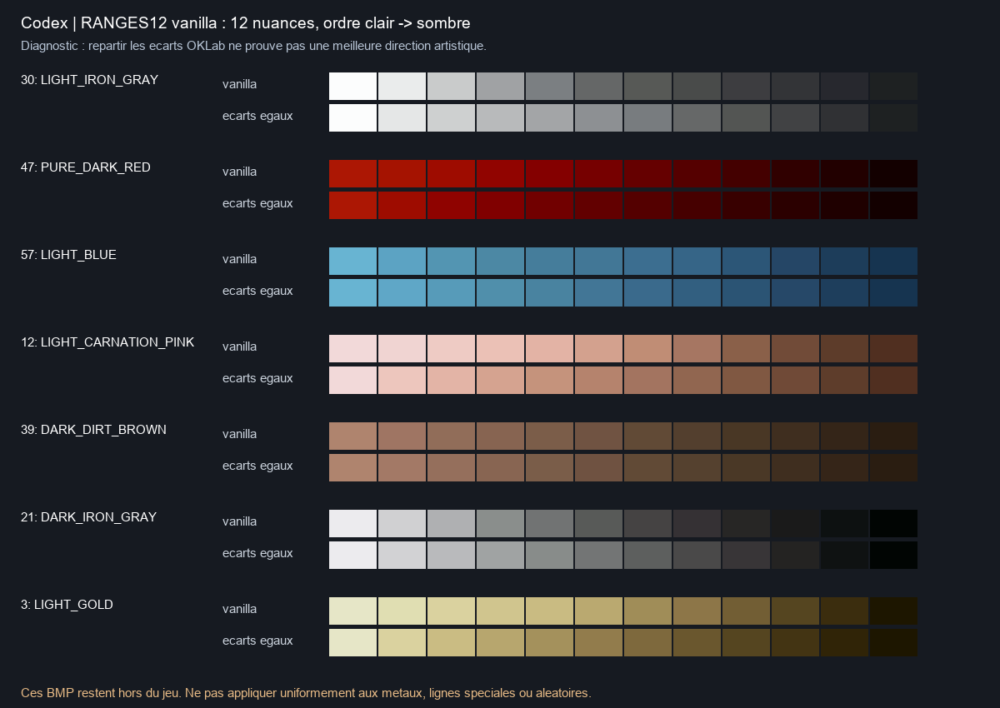
What the demo shows. “12 shades” represents the native limit and the study’s Q0 baseline. “1/8 sub-shades” represents the implemented V6: 89 positions per range (11 intervals × 8, plus the final shade), with no new player colour choices. Bayer imitates the gradient with a pattern. F’s eight values logically need 3 bits, but the current file stores them in bytes.
Odd rows. A few rows of the chart do not run neatly from light to dark, others repeat the same colour. Non-monotonic: 197, 198, 199, 204, 212, 213, 221, 253, 255. Repeated RGB: 74–78, 222, 225. These are cases to interpret, not errors to fix wholesale.
Decision. Never rewrite MPALETTE: the change would be global, for every character, item and mod.
What actually needs to be produced
Two counts answered two questions: the repository's index (656 world BAM) and the complete vanilla stock inventoried by GPT 6-Astra (774 BAM). They reconcile exactly, re-checked against the CSV.
Know how many files must be processed for a single fighter, and which ones are useless, before launching hours of computation.
Astra went through all the game's archives and listed every animation file and every compatible item. Opus started from the index the project already keeps. The two totals differed.
Both counts were right: they were not counting the same thing. 774 files exist in the game, 656 concern the character in the world, 628 are actually useful for a human female fighter.
A character is not one image but a stack of animated layers: the body (which changes with the armour worn), the weapon, the shield or second weapon, the helmet. Each layer has its own animation files, the BAM, one per type of action (walking, striking, casting a spell…). Each BAM holds cycles, i.e. an animation seen from one angle, themselves made of frames, the successive images.
92 BAM
Four versions of the body, one per armour level, each in 23 action files (4 × 23 = 92).
CHFB1 no armour, CHFB2 leather, CHFB3 chain mail, CHFF4 plate (the prefix changes at level 4). 23 suffixes each.166 + 72
166 files for the weapon held in the main hand, 72 for the one held in the off-hand (dual wielding).
Main hand and off-hand (WQN…OA7/OA8/OA9/OG1). Unsplit overlays: their G1 groups the states.60 BAM
Twelve shield families. A thirteenth exists in the game, but no item uses it.
FamiliesC0–C7, D1–D4. D0 (5 BAM) has no item.238 BAM
The wearable helmets. Two families filed among them are not helmets: creature attacks, and wings forbidden to humans.
H0–H5, J0–JC. H6 = creature attacks (59 ITM), ZW = wings forbidden to humans.774 vanilla stock = 656 repository index + 85 paperdolls (4 bodies CHFF*INV, 81 WPN*INV/OIN) + 33 world stock (D0: 5, H3/H4: 28) 656 index = 628 useful + 14 ZW + 14 H6 628 useful = 92 body + 166 weapons + 72 off-hand + 60 shields + 238 helmets frames: 178,360 (index) · 185,335 (stock) · 153,422 > 1 px
Reading it: the game holds 774 files for this fighter. 85 are paperdolls, the large figure on the inventory screen, which is a separate project. 33 exist in the game but no item calls them. That leaves the 656 of the repository index (178,360 frames), including 14 files of wings forbidden to humans and 14 creature attacks: hence 628 useful files. Many frames are placeholders (see below): of the 185,335 in the full stock, 153,422 are larger than one pixel.
| Suffix | Cycles | Action |
|---|---|---|
| G11 · G1 | 0–8 · 9–17 | walk · one-handed guard |
| G12 · G13 | 18–26 · 27–35 | idle · two-handed guard |
| G14 · G15 · G16 | 36–62 | hit · death · on the ground |
| G17 · G18 · G19 | 63–98 | idle · idle · sleep/get up |
| A1–A9 | 0–8 | one-handed, two-handed, dual-wield and throwing attacks |
| SA · SS · SX | 0–8 | bow · sling · crossbow |
| CA | 0–71 | 4 spellcasting variants |
The suffix is the end of the file name: CHFF4 + G11 = body in plate armour, walking. Cycles are numbered by direction: 9 directions per action, hence the blocks of 9 (0–8, 9–17…).
9 + 7 mirrored
The character can face 16 directions. Only nine are drawn; the seven east-facing orientations are obtained by flipping the image as in a mirror. One study said “9 + 5”: corrected.
S to N stored, seven east orientations obtained by mirroring. Not “9 + 5”.1×1 frames, index 2
Many frames are one-pixel black placeholders. The game relies on them: they are kept exactly as they are, simply not upscaled.
CHFB1G11: 846 entries, 90 real frames. Keep frame, lookup, centre, cycle; skip only the inference.Route, don't replace
The same files serve several characters. So no game file is ever replaced: the project's module already knows how to route, animation by animation, to the right HD version.
CHFB1–3 serves 6 animations, WQN* 13. The DLL already routes by animation ID → memberships → component.How equipment is assembled
An equipped fighter is built from independent images. The body, weapon, shield and helmet need not have the same size or the same centre in their files. Their anchor points align them; they then follow the cycles and direction defined by the engine.
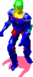
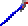
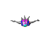
Each layer is coloured with its own realised palette, then composited. The shield occupies the off-hand path; dual-wielding uses that path for another weapon. An absent layer remains absent. Upscaling preserves native geometry and anchors: the texture has more pixels while the character occupies the same space in the world.
Inventory and production describe different scopes. The 628 BAMs remain the useful subset explained above. Full production covered the index’s 656 BAMs, or 178,360 frames. For the UI, 81 normal BAMs were selected and accepted (4 bodies + 77 equipment files, 163 frames), from the 85 UI files originally inventoried.
The inventory figure has its own path
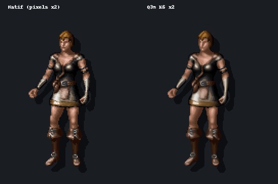
Complete UI production and acceptance followed this preview. They concern the 81 normal 6110 BAMs and retain Nearest; they do not automatically accept other avatars’ paperdolls.
xBR and ReboutCX, at x2 and x4
GPT 6-Astra computed the four variants on 60 real frames: four bodies, plus a complete attack cycle (14 frames) for the body, sword, shield and helmet. The plates are enlarged to 8 screen pixels per source pixel.
See concretely what each upscaling technique brings, and what is lost when going back to the game's colours.
Four versions actually computed (xBR x2, xBR x4, ReboutCX x2, ReboutCX x4), then a decisive test: rerun the network with other colours, and count what changes.
The network does not draw the same shadows depending on the colours it is shown: 20 to 44% of the numbers change. A recipe tuned under a single palette therefore cannot suit all of them.
xBR, a rule-based algorithm
It looks at each pixel and its neighbours, and rounds off the staircase edges according to fixed rules. It creates no colour: every enlarged pixel reuses the number of an original pixel. Same input, same result, every time.
xBR picks the geometry from the “clown” colours (the file's working false colours) and carries the indices across.ReboutCX, a neural network
A program trained to redraw images at four times the size. It adds modelling: volumes, highlights, gradients. But it takes in and returns an already coloured image, knowing nothing of numbers, materials or transparency.
ReboutCX processes a recoloured preview and takes alpha and classes from the xBR guide at the same scale.The original file gives the structure
Cycles, frame order, anchor points, placeholders: taken as they are from the BAM, never recomputed.
xBR gives the material
Transparency, shadow and class (the material) of each HD pixel come from the xBR version at the same size, which serves as a guide.
ReboutCX gives the modelling
The network provides volumes and gradients, and nothing else: never the transparency, never a pixel's material.
The “inference” views only exist for the unarmoured body, the plate body and the helmet: the three items of the sensitivity test below.
Exact witness
Exact source colours, better outlines, remaining steps. No new shade. Path accepted in QA for playable characters (with the Catmull-Rom display filter).
Fine witness
A true xbr4x, not two x2 passes. Finer curves, same colours: of little interest on its own.
x4 network + BOX
There is no x2 model: the x4 result is reduced by block averaging (BOX), in floating point, before any rounding. Smoother surfaces, small highlights sometimes smoothed away.
Research master
The reference working version. RRDBNet 64nf/23nb, 16.7 M parameters, RGB with no alpha and no temporal memory: it processes each frame on its own. Provenance and licence unknown, to be clarified before any distribution.
What if the player changes colours?
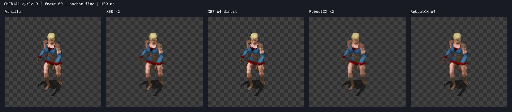
CHFB1A1, 100 ms per frame (a rate chosen for comparison, not the game's). The equipment layers were evaluated separately.The finding that shapes everything. Recolouring the numbers works, as the plate above shows. But recolouring is not redrawing. Rerunning ReboutCX inference under another palette, instead of recolouring the result, changes 31.99% / 44.39% of the body's indices, 20.26% / 36.28% of the heavy armour, 30.91% / 37.04% of the helmet (“contrast” / “pale” profiles). The network does not shade the same way depending on the colours it receives.
Keeping the classes keeps recolouring possible, but not good modelling under every colour. Hence multi-palette fitting: choosing the numbers so they stay good under several sets of colours at once.
Candidates limited to the source frame. This study’s Q0 baseline only allowed shades already present in the original frame. Allowing the entire class reduced error by only 5.9% at x2 and 6.2% at x4. This remains the conclusion of that trial: the main bottleneck was 12-level discretisation. The selected Q3m then searches fractional positions within the allowed class under several palettes.
For the curious: on the project's machine (RTX 5090), the network loaded in 3.3 s and upscaled the 60 frames to x4 in 2.6 s; xBR processed them in 0.12 s (x2) and 0.14 s (x4). A micro-measurement on this small sample, not a production throughput.
Bringing the model back to a living palette
All start from the same ReboutCX output and the same classes (xBR guide). Only the way back to dynamic colours changes. Verdicts after all the reviews.
Find the best way to translate the network's image, made of thousands of tones, into numbers the game can recolour.
Ten approaches pitted against each other on the same images, from the same starting point. Only the step back to the palette changes.
Dithering, single-palette tuning and HD reclassification are discarded. Q3m is selected and implemented with K6. The Q8 prototype remains explained and visible in the study; constrained Q8c was dropped without implementation on 2 October.
The network paints with endless tubes of paint; the game has only 12 pencils per material. Palettising means deciding, for each pixel, which pencil best imitates the paint. The methods differ on three points: which pencils are allowed; whether an in-between tone can be faked by alternating two pencils (dithering) or truly mixed (fraction); and under how many sets of colours the choice is checked.
| Code | Method | Stores | Runtime | Final verdict |
|---|---|---|---|---|
| xBR | Direct xBR, index provenanceNo neural network: rule-based upscaling that keeps the original numbers. | index | current | accepted path · option |
| Q0 | Study Q0 baseline: nearest shade among those in the x1 frame, REF paletteRound each pixel to a shade used in the original image, judged under one palette. | index | current | historical baseline |
| Q1 | Same, whole classSame, but all 12 shades of the material are allowed. | index | dependency mask | no gain in validation |
| Q2 | Bayer 4×4 anchored at the BAM centreDithering: alternate two shades following a fixed checkerboard to fake the in-between. The checkerboard is pinned to the character so it does not slide when they move. | index | current | rejected by default |
| Q7 | Error diffusion along the rangeAnother kind of dithering: a pixel's rounding error is pushed onto its neighbours. Pretty on a still image, unstable in animation. | index | current | rejected |
| Q6 | One index chosen over K palettes at onceStill a single number per pixel, but chosen to be the least bad under several palettes. | index | V6 without fraction | optional step |
| Q3 | Fraction fitted on REF only (= Astra's interpolation)Sub-shades: each pixel sits between two neighbouring shades, but the position is tuned under a single palette. Astra had the same idea independently. | index + fraction | V6 | overfits the palette |
| Q3m | 3-bit fraction fitted on K palettesSub-shades in eighths, tuned to stay right under several palettes. The chosen method. | index + fraction | V6 | selected · K6 implemented |
| Q5 | Q3m + class re-estimated in HDQ3m, letting the network re-decide the material of some pixels. | index + fraction | V6 | no gain outside tuning |
| Q8 | Q3m + weighted blend of two classes at boundariesQ3m, plus a measured blend of two materials for the pixels on their boundary. | + boundary plane | off-game prototype | Q8c dropped, unimplemented |
“Stores” means the information needed per pixel. Paths labelled “current” refer to the runtime at the study’s date; V6 is now implemented. K is 3 in E3b (REF, B, C), then 6 in P1. The E3b prototype used 4-bit fractions; the 3-bit check and the V6 eighths contract are separate. Ablation: removing an ingredient to measure its contribution.
Slide and compare
Composite of the plate body CHFF4 + helmet HELM01 + shield ISHLD03 + sword BDSW1H06, facing south. Tuned on REF, B, C; D and E were not used for any tuning (E differs from REF only in the armour).
Judge for yourself. The numbers say what is close to the network's drawing; only your eyes say what looks good.
The images from experiment E3b: the complete fighter, idle and walking, rendered by each method under four sets of colours.
Under the tuning palette, everything looks alike. Under another, the current method leaves light fringes around the armour plates; Q3m and Q8 remove them.
How to use it: pick a method on the left, one on the right, then drag the divider. Change palette to see what happens when the player picks other colours. “Original game” shows the starting image, enlarged without retouching.
- Current Q0 under B, D and E: light or orange fringes around the chest plates and greaves. The 88–255 blends chosen under REF become conspicuous under another palette.WhyAt boundaries between two materials, the current method readily picks a “blend” colour. Under the tuning palette, that blend lands exactly on the right tone. If the player changes one of the two materials, the blend changes too and no longer resembles the network's drawing.
- Q3m keeps smooth volumes; Q8 removes almost all the fringes. It is the variant closest to the model output.
- Bayer: a regular pattern on the large plates. Diffusion: grain that changes from one frame to the next.
- The raw model output is recomputed for each palette: a target, never reachable in game, where a single version of the indices serves all of the player's colours.
- The original game reminds you of the starting point: same numbers, same colours, four times fewer pixels in each direction. Tile added for this page, with no AI computation.
Opus's methods on Astra's ground
Complete attack cycle (14 frames) of CHFB1A1, WQNS0A1, WQNC0A1, WQNJ6A1. Validation on D and Astra's “contrast” and “pale” profiles. Astra's interpolation is run with its own function, imported read-only.
Decide between the two studies without home advantage: a method can shine on images chosen by its author and disappoint elsewhere.
During its cross-review, Opus replays its methods on Astra's images and palettes (a complete sword swing, four layers), and runs Astra's method with Astra's code, untouched.
Both models had the same starting idea, with the same results. What makes the difference is tuning on several palettes: −23% error vs the current method, −20% vs Astra's interpolation.
Q3 and Astra's interpolation are the same idea: a fraction tuned under a single palette. Same numbers (47.2 and 47.0), excellent under their own palette, weak elsewhere.
Q8: −23% vs the current pipeline, −20% vs Astra; on D alone, 58.1 → 43.6.
sRGB or linear light for interpolation: 37.8 vs 38.1. No useful difference: the runtime will interpolate in sRGB bytes, simpler and bit-exact.In plain wordsThere are two ways to mix two colours: average the stored numbers directly (sRGB), or first convert them into amounts of light (“linear”), which is physically more accurate. Here there is no visible difference: the simpler one is kept, which also gives exactly the same result on every machine.
Limit: E5 does not include Q3m, so there is no ablation of the boundaries on this corpus.
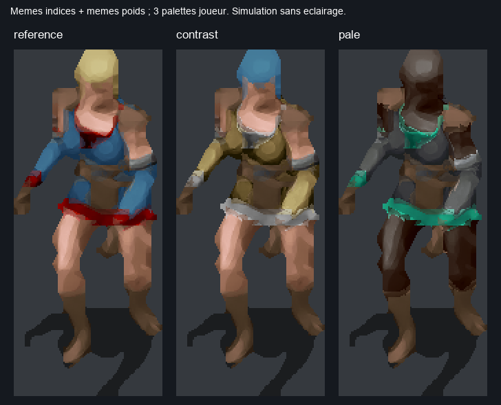
In motion, and a sign error
A still image can be superb and the animation unpleasant: if pixels change shade for no reason from one frame to the next, the surface “crawls”. It is also in this measurement that the cross-review found the study's most instructive error.
Measure the crawling, because players see their character in motion.
Overlay two successive frames of an animation, find the pixels the network draws almost identically, and count those whose rendered colour jumps anyway.
With sub-shades, the body's crawling drops from 14.1% to 5.7% (4.8% with Q8). Error diffusion doubles it. And the measurement itself contained an error, found by the other model.
To compare two frames of an animation, you first have to overlay them correctly. Each frame has its anchor point, and that point is not in the same place from one frame to the next. Opus's script computed the offset the wrong way round: a simple flipped sign. As long as the anchor did not move, no consequence; as soon as it moved, pixels that did not correspond were being compared. And it moved often: over the 19 idle transitions, 9 times for the body, 15 for the helmet, 10 for the shield and 19 for the weapon.
GPT 6-Astra found it by redoing the calculations, proved it with an artificial test (the same image, cropped), then recomputed everything. The final review found the same error in experiment E5.
Astra found that the frame alignment compared different positions whenever the anchor moved:ox = (centre_b − centre_a) × scale instead of (centre_a − centre_b). Synthetic test: 5 wrong comparisons out of 5 before, 0 out of 6 after. The figures below are recomputed.
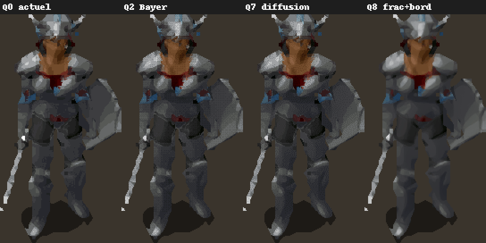
Share of still pixels (target Δ < 0.01) whose output changes by more than 0.02. Always publish the aggregation: over the 4 unweighted layers, Q8 goes from 13.6% to 10.0%; weighted by pixels, from 13.2% to 4.9%.In plain wordsA pixel is “still” when the network draws it almost identically on both frames; it “flickers” if the final colour changes anyway. Depending on whether the four layers are weighted equally or each is weighted by its number of pixels (the body then counts far more than the helmet), Q8 goes from 13.6% to 10.0%, or from 13.2% to 4.9%. Both are true; always say which one you quote.
Shade-by-shade decisions
When the model hesitates between two shades, a tiny variation flips whole pixels. With the fraction, the same hesitation costs only an eighth of a shade.
Bayer: not by default
Pixel error +6 to +10%, visible pattern. After a σ 0.5 blur (a slightly blurred image, like the eye at a distance), it beats no dithering (0.0125 vs 0.0139), but interpolation does even better (0.0114). Noise renewed on every frame: forbidden.
No surface tracking
Pixels aligned by anchor, shadow included, loops and durations ignored: if the arm moves, the measurement does not follow it. The E5 attack has too few still pixels to conclude. A class-restricted flow is needed, i.e. tracking the motion of each material.
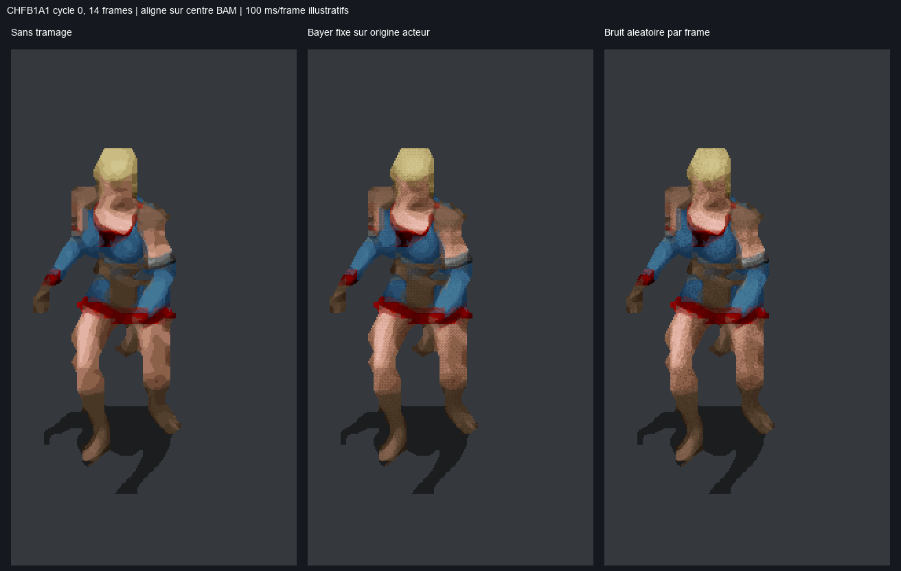
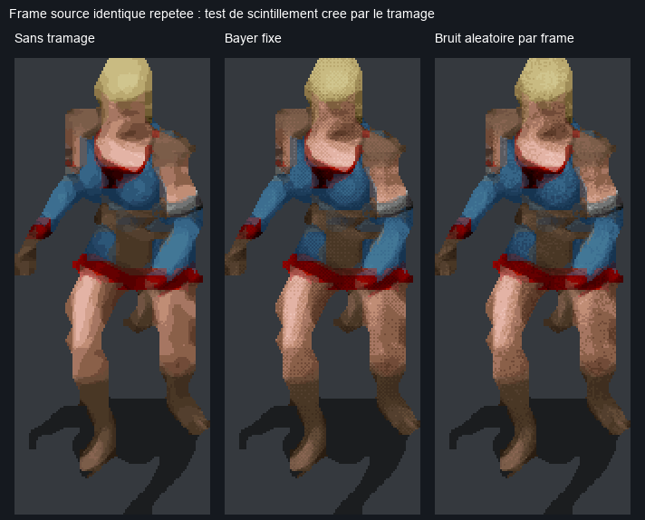
Temporal evaluation was also expanded
Across ten validation palettes, weighting recolourable pixels and comparing distinct poses including the loop seam, Q0 → Q3m K6 changes fall from 20.28 to 8.36% at x2 and from 21.66 to 9.40% at x4. Unweighted aggregation gives different values: 29.63 → 23.91% and 29.07 → 24.01%.
These results complement the older charts; their masks and aggregation differ. Alignment still uses anchors without optical flow: these figures do not establish moving-surface tracking or actual timing in seconds.
x2 or x4 on screen
The game preserves native geometry and displays the texture at the selected zoom. At the study’s date, the runtime used Nearest, Linear or Catmull-Rom without mipmaps. Later trials added BOX and tested x4 mipmaps. The selected Q3m choice is x2 + BOX; the older simulations and Q0 trial remain below.
Decide how many pixels to ship. Four times finer only matters if the screen can show it.
Display simulation at several zooms, followed by the Q0 trial on 26 September. Later evidence includes the Q3m x2/x4 videos of 1 October and BOX/mipmap trials at the zoom actually used.
The final choice for the Q3m trials is x2 + BOX. x4 can smooth outlines further, but its rendering looks more “plastic”. x2 retains a more natural pixel-art character. BOX was preferred to mipmaps when zooming out, and x2 reduces compositing work and upload traffic.
The HD sprite is not displayed bigger: it takes the same space on screen, with more pixels inside. Depending on the player's zoom, the screen sometimes has fewer pixels to offer than the image contains, and the image must be shrunk. There are two ways to do it: nearest neighbour, which takes a single image pixel for each screen pixel, at the risk of skipping some (aliasing); or area downscaling, which averages the pixels covered. Mipmaps are copies shrunk in advance, from which the graphics card picks according to the displayed size.
In the historical simulation, Nearest selects one texel while Linear and Catmull-Rom reconstruct the image locally. The later BOX filter measures the texture area covered by a screen pixel and averages it. It keeps nearest neighbour when magnifying. x4 mipmaps were another tested mode, using trilinear minification and Nearest magnification.
Each thumbnail shows nearest neighbour on the left and area downscaling on the right. The number measures the gap between the two: the smaller it is, the less nearest neighbour damages the image.
Corrected reading. The gap between the two methods only puts x4 at a disadvantage at integer zoom 2, where x2 is exact by construction: each x2 pixel then lands exactly on a screen pixel. At 1.0, 1.3 and 3.0, x4 aliases less than x2. The claim “x4 only useful from zoom 3” is withdrawn.
In game, on 26 September: x4 ReboutCX on all of 0x6110, with nearest neighbour, judged “slightly better than x2”, 59.1–60 FPS, p95 16.8–17.3 ms (95% of frames computed in under 17.3 milliseconds: no loss of smoothness), then restored to x2.
| x4 test of 26 Sep | x2 | x4 |
|---|---|---|
| Uncompressed indices | 947.6 MB | 3,790.4 MB |
| Compressed registry | 195.9 MB | 309.6 MB |
| Ratio | — | ×1.58 |
| Verdict | reference | slightly better |
Gap between nearest neighbour and area downscaling for every simulated combination, zooms 1.0 to 3.0 (smaller = less aliasing). At zoom 2.0, x2 is 0 by construction; at every other zoom, x4 beats x2 for each method.
BOX, mipmaps and Catmull-Rom: three filtering approaches
When zooming out, several texels — texture pixels — may fit inside one screen pixel. Picking just one can remove a thin line or make it flicker. Filtering determines how those texels contribute to the displayed colour.
BOX
Average texels within the covered area, weighted by each texel’s overlap. When magnifying: Nearest.
Mipmaps
A texture pyramid: original, half, quarter… The GPU blends levels according to minification.
Catmull-Rom
Local cubic interpolation over 4 × 4 neighbours. This fixed neighbourhood does not average an entire large minification footprint.
Conceptual diagrams, not comparative captures. Squares represent texels; BOX’s gold outline shows a covered area not aligned with the texel grid.
Transparency and edges. BOX and the tested mipmaps use premultiplied alpha: transparent pixels must not contribute black to the outline. RGB is weighted by alpha before reconstructing the colour. The BOX shader samples the base texture; it stores no pyramid.
Why mipmaps cost more here. The sprite is recoloured and recomposited during play. Reduced levels in the x4 trial therefore had to be regenerated after uploads, together with their masks. This cost belongs to that dynamic implementation; mipmaps remain useful for static textures.
| Measured session | CPU composition / frame | Base RGBA upload |
|---|---|---|
| x2 + BOX | 0.148 ms | 11.082 MB/s |
| x4 + BOX | 0.280 ms | 44.269 MB/s |
| x4 + mipmaps | 4.258 ms | — |
Short independent sessions on the studied Character scene, near 60 FPS; movement and zoom paths were not strictly identical. Upload time is nested in composition, so times must not be added. Base traffic is not GPU memory usage; no global FPS improvement is inferred.
Visual result. BOX was preferred to mipmaps as the camera zoomed out. The choice recorded on 2 October is x2 + BOX without mipmaps: a more pleasing appearance and lower cost in these trials. Paperdolls remain Nearest because UI rendering uses a separate path. Later monster experiments can use another filter without changing this Character decision.
Catmull-Rom tested. This filter already existed and had been accepted with xBR. For the Q3m choice presented here, its smoothing was less convincing than BOX. It reconstructs an image locally; it does not replace averaging the full footprint at strong minification. No specific defect is attributed to it without a controlled comparison.
Compare x2 and x4 in motion
The existing HTML player is embedded below with its two original MP4 recordings, without additional re-encoding. Drag the divider, slow playback or step through frames. Character zoom ×3 enlarges the recording without creating detail.
The recordings are 2560 × 1440 at about 59.94 frames/s. Initial alignment advances x4 by ten frames, or 0.167 s, for the selected fighter; other actors can have different animation phases. The common excerpt lasts about 5.39 s and shows idle motion, not every action or effect.
Why x2 remains selected. x4 can smooth some outlines further, but this smoothing can give sprites a more “plastic” appearance. Upscaling cannot reliably recover details missing from the original image. x2 retains a more natural look and a slight pixel-art character, considered more pleasing to the eye. x4 trials provided comparisons; x2 was retained as the production scale.
BOX shader detail: area averaging for minification, Nearest for magnification. The current path limits the footprint to 16 texels per axis; beyond that it falls back to Nearest. P4 zoom trials stay within this range.
The numbers
4 layers, idle facing south (20 poses) and walk facing south (10), 5 palettes. Error = mean ΔE OKLab ×1000 against the model output under the same palette. Shorter = better. Fidelity to a generated target, not perceived beauty.
Put a number on each method, to compare other than by eye, and see whether it still holds when the colours change.
120 images (4 layers × 30 poses), 5 palettes, 10 methods, two sizes. Three palettes tune the methods, two check them.
Q3m cuts the error by 14.1% on the validation palettes, Q8 by 18.4%. Sub-shades tuned on several palettes cover 77% of the way; boundaries add about 5%.
The error
For each pixel, the distance between the colour the network drew and the one the game will display, measured in OKLab. The values are averaged and multiplied by 1000 to avoid leading zeros: 40 means 0.040, a difference the eye can perceive. The shorter the bar, the better.
Tuning and validation
Like a student revising on past papers, a method can learn by heart the palettes used to tune it (REF, B, C). So it is also judged on palettes set aside (D and E). Excellent in tuning and mediocre in validation, it has overfitted.
The limit
This measures fidelity to the network's drawing, not beauty. If the network draws badly, being faithful to it is no virtue. Hence the importance of the in-game test.
The seven numbers are, in order: metal, minor, major, skin, leather, armour, hair. The last column comes from a check added during the final review: it counts the channels identical to those of a tuning palette. The higher it is, the less unfamiliar the validation.
Historical size: a zlib sample excluding Q8’s boundary plane, masks and metadata. E3b used 4-bit fractions; a separate check showed little loss from switching to 3 bits. These sizes do not represent current V6 files. D shares 1 of 7 channels with tuning, E shares 6. P1’s XPRESS_HUFF measurements are added below with their own scope.
K6: six tuning palettes, ten distinct validations
Selected fitting gives equal weight to REF, DEFAULT and four colour rotations. At the same channel, VAL01–VAL10 share neither a range number nor an identical RGB ramp with the union of these six palettes. LEGACY_D and LEGACY_E remain historical diagnostics and do not determine K.
The corpus has 180 occurrences, 144 distinct BAM frames, four layers and all four armour bodies; 18 palettes produced 2,592 targets. The score averages ten OKLab errors, weighted by recolourable pixels, against ReboutCX’s generated image.
| Method | x2 ΔE ×1000 | x2 gain | x4 ΔE ×1000 | x4 gain |
|---|---|---|---|---|
| Q0 | 33.305 | — | 35.552 | — |
| Q6 K6 | 28.729 | 13.74% | 30.636 | 13.83% |
| Q3m K3 | 26.243 | 21.20% | 28.530 | 19.75% |
| Q3m K4 | 24.940 | 25.12% | 27.220 | 23.44% |
| Q3m K6 | 24.285 | 27.08% | 26.523 | 25.40% |
Why K6. K3, K4 and K6 improve all ten validation palettes. K4 stays 2.70% above the best x2 score and 2.63% above the best x4 score; the set criterion was ≤ 2%. K6 is therefore selected at both scales. This does not promise improvement under every palette: REF alone has 6.10% more error at x2 and 11.59% more at x4, while DEFAULT improves by 30.43% and 29.64%.
View the real K6 x2 plate
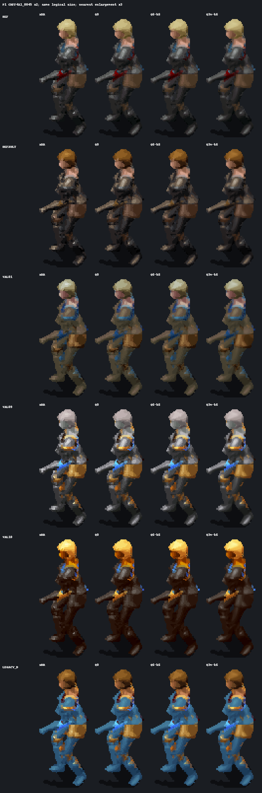
Actual compression measurements. With XPRESS_HUFF, separate planes and a 32-byte mask per frame, the P1 sample grows from 173,704 to 343,620 bytes at x2 (×1.98), and from 407,818 to 859,646 at x4 (×2.11). Here Q3m x4 is 2.50 times the size of Q3m x2. V6 headers and the representative table are excluded: these are sample sizes, not final package sizes.
For reference, the study’s partial zlib estimate was about ×1.98 at x2 and ×2.26 at x4 for fractional methods, excluding boundaries and metadata. This historical estimate remains informative but sets no V6 budget. The XPRESS_HUFF sizes above use a different protocol.
What each review corrected
The original studies remain intact. The errors are listed here with their evidence; none reverses the architecture, several change the order or scope of decisions.
Show that the protocol is worth it. A study with no errors found is not a study without errors.
Each review had to redo, not just re-read: rerun the scripts, reopen the game's program, recount the files.
Sixteen corrections. None overturns the solution; several change the order of work or the scope of a conclusion. Nobody escapes: each model was corrected by another, and Opus also by itself.
| Claim | Source | Correction | Found by |
|---|---|---|---|
| Catmull-Rom “not implemented” | 5.6 SOL synthesis | CatmullRom mode present (premultiplied 4×4 shader); xBR QA of the playable characters accepted with this filter on 11 SepThe display filter does exist, and it is even the one the project author used when validating the playable characters in xBR. | final review |
| “Unseen” validation palettes | all | E: 6/7 channels shared with training, contrast 5/7, pale 4/7, D 1/7They closely resembled the tuning palettes; only D is truly new. | final review |
| Q8 gain attributed to boundaries | presentations | 77% of the gain comes from Q3m; boundary ≈ 5%Most of the progress comes from sub-shades, not boundary handling. | final review |
| “x4 aliases more than x2 at the usual zoom” | Opus | True only at exactly zoom 2; in game, x4 judged slightly better | final review |
| “ReboutCX accepted in game on 0x6100” | Opus's cross-review | 2 compositions accepted + 1 non-inferiority, preference undecided; xBR remains the accepted path at scaleOn the human male fighter (0x6100), ReboutCX was accepted for two compositions only (Minsc's body and equipment, then Anomen's); a third was judged “non-inferior”. | final review |
| Fraction “q/7” | 5.6 SOL synthesis | f/8 towards the next shade, 89 positions, as measured | final review |
| “The 2nd weapon keeps weapon semantics” | 5.6 SOL synthesis | Not demonstrated; no effect on the encoding (palette captured per cell); in-game test | final review |
| “Extend the cache key to the palette” | Opus | Already the case (reboutcx_cache_p12.py:33-39) | final review |
| E5 temporal | Opus's cross-review | Same sign error as E3b (e5_cross.py:237) | final review |
The engine reads RANGES12 | Opus | MPALETTE; identical files | GPT 6-Astra |
Paperdolls WPM; H6 and ZW to produce | Opus | WPN; H6 = attacks, ZW forbidden to humans | GPT 6-Astra |
| Temporal alignment | Opus, E3b | Sign flipped; body Q0 → Q8: 14.07 → 4.82% | GPT 6-Astra |
| Q8 “3 bits”; size ×2–×2.3 | Opus | Measured at 4 bits (3 bits ≈ lossless); size = that of Q3m without boundary | GPT 6-Astra |
| “Floor of 0.04 impassable” | Opus | Residual of these methods, not a bound0.04 was the error left by these particular methods, not a proven limit. | GPT 6-Astra |
| Full classes: DLL required / no change | Astra / Opus | Rendering unchanged, but the meaning of dependencies changes: explicit V6 maskEach was half right: the displayed image does not change, but the meaning of a field in the file does. Hence the V6 format's dependency mask. | cross |
| Sampled idle (4 poses / 12) | Opus, E3 | E3b: 20 pose changes | Opus itself |
What changed since the presentation
- “Method never seen in game”: Q3m trials completed; QA scopes remain separate.
- “K still to choose”: K6 selected after ten disjoint validations.
- “V6 with an optional boundary”: I/F and dependencies implemented, without boundaries or packed fractions.
- “No downscaling or mipmaps”: BOX added, x4 mipmaps tested; x2 + BOX selected.
- “Monsters have no problem”: V7 adapts partners to fixed or recolourable profiles.
- The old 4-bit E3b charts remain historical; they are not measurements of 3-bit V6.
An HD sprite that stays a palette
The master holds the geometry, each pixel's class and a continuous position within its range; the engine supplies the colours. The player keeps their choices, and palette effects follow with no specific code.
Turn the results into a precise recipe: what to record in the HD file, and how the game's module must read it back.
Merging the three studies, then a bit-level specification during the final review: the same computation must give exactly the same result when building the files (in Python) and in the game (in C++).
An implemented V6 that keeps the old format’s idea and adds fractions and explicit dependencies. Without fractions, it reconstructs the same pixels as V5. The boundary plane imagined during the study was not delivered; its proposal is retained below as a historical explanation.
The complete chain, from the original file to the screen
- 1The original file (BAM). It provides the structure: pixel numbers, cycles, frame order, anchor points, placeholders.BAM V1 P8 (indices, cycles, lookup, centres) — topological truth.
- 2xBR, at the same size as the HD version. It says, for each HD pixel, whether it is transparent or shadow, and which material it is.xBR xN (same scale) → alpha, shadow, class per pixel — semantic truth.
- 3ReboutCX x4, under several palettes. The network draws K versions of the same image, one per set of colours: these are the targets.ReboutCX x4 RGB under K palettes → targets T_1..T_K — modelling truth, never semantics.
- 4The multi-palette encoder. For each pixel, it picks the base shade and fraction that best match the K targets at once, computing exactly what the game will display.Multi-palette encoder, optimised against the exact decoder.
- 5The V6 registry. The HD file shipped with the mod.u8 I plane + optional u8 F plane (values 0..7) + dependencies and decoding contract. No boundary plane.
- 6In the game, the IEE module. It captures each layer's 256 colours, prepares a table of 2,048 colours, colours the pixels, stacks the layers and hands the image back to the game, at the original size.IEE DLL (CPU, existing compositor): P[256] captured per layer after Realize → 2,048-entry LUT → pixels → native compositing → texture (x1 geometry).
// Implemented V6: fractions in eighths I u8 base index F u8 0..7; absent ⇒ 0 dep_mask 256 bits entries actually read succ(i) = neighbour in the same range; end ⇒ i RGB = (P[I]·(8−F) + P[succ(I)]·F + 4) >> 3 alpha = native alpha of P[I] // no cross-class blend in this V6
The base shade
One number from 0 to 255 per pixel, exactly as today.
The eighths
How many eighths (0 to 7) the pixel moves towards the next shade. When absent, it is 0 everywhere: that is the old format.
The dependencies
The list of palette slots the image needs. If decoding had to read an undeclared slot, the image is rejected rather than displayed wrong (fail-closed). The list also ensures the computation is only redone when a colour actually used has changed.
The boundaries
Historical proposal: a second material (I2, F2) and a weight W from 1 to 7 eighths at boundary pixels. This plane does not exist in delivered V6. V7 later uses B to select a partner, with a different meaning.
lerp8 takes (8 − f) parts of the base shade and f parts of the next one, then divides by 8; “+ 4” rounds to nearest and “>> 3” divides by 8. With f = 0, the base shade is unchanged. succ(i) stays within the same 12-shade range or 8-shade blend, never crossing its end or special indices. The LUT conceptually represents 256 × 8 = 2,048 colours. The code prepares the I/F pairs used, rather than necessarily filling every entry on each frame. The mixer uses this formula. V5 compatibility concerns reconstructed pixels, not identical files.
Exhaustive search
For each pixel, the 89 positions of its range are decoded under the K palettes and compared in OKLab. What gets kept is what the runtime will really display.
No tricks: every possible position is tried and the best one on average over the K palettes is kept.K = 6
REF + default fighter (30 91 93 12 23 93 2) + four “Latin square” rotations, equally weighted. Ten validation palettes share neither a range number nor an identical RGB ramp at the same channel with the tuning union. K3 and K4 remain the alternatives compared before choosing K6.
“Latin square”: palettes built so that each material receives clearly different tones from one palette to the next, one light and one dark for each.Re-encode
BOX of the x4 targets in floating point, then encoding at x2 with the xBR2 guide. Never reduce already quantised planes.
The network's drawing is shrunk, then the whole choice of shades is redone at that size. Shrinking a file already converted to numbers would make no sense: the average of two numbers is not a colour.Dropped historical direction
The proposed Q8c would choose the best neighbouring class, rather than the first, use at most two channels and retain primary weight ≥ 1/8. Acceptance required a clear gain. These constraints remain explained, but Q8c was dropped without implementation.
The prototype took the first neighbour found: 13.3% of its boundary pixels mixed more than two channels, and 8.4% lost their main material entirely.| Parameter | Value | Proof |
|---|---|---|
| Palette resource | MPALETTE.BMP, never modified | confirmed |
| Modelling | ReboutCX x4 under K6, for each required source and paletteThe old ≈282,000 estimate with K3 came from the study’s scope, not a count of K6 production. Deduplication and caches avoid repeated work; actual cost depends on the exact union of compatible keys. | measured |
| Semantics | same-scale xBR guide + index provenance | confirmed |
| Encoding | Q3m, 3-bit fraction | measured |
| Boundaries | Q8c dropped without implementation; historical prototype retained | dropped |
| Runtime interpolation | sRGB bytes, defined rounding | measured |
| Dithering | none | measured |
| Scale | x2 retained; BOX for the world, Nearest for UI | decided |
| Reconstruction | CPU in creature_sprite_x2.cppPalette reconstruction and compositing on CPU; BOX display filtering uses a separate shader. This is not full GPU palette reconstruction. | implemented |
| Soft alpha | Optional V8, separate Ankheg experimentThe established path retains native transparency and partial shadow. Spline Fit 1 rejected; light alpha installed for a new trial, without accepted QA. | ongoing trial |
Historical proposal: fractions and boundaries
// V6 registry = V5 + optional additions plane I u8 base index (same as V5) plane F 0..7 fraction towards succ(I) // absent ⇒ exactly V5 dep_mask 256 bits P entries read // fail-closed plane B option (pixel, I2, F2, W 1..7) at boundaries // bit-exact decoding, Python = C++ succ(i) = i+1 within the range or pair, else i lerp8(a,b,f) = (a·(8−f) + b·f + 4) >> 3 pixel = lerp8(P[I], P[succ(I)], F) boundary = (C(I,F)·W + C(I2,F2)·(8−W) + 4) >> 3 LUT = 2,048 entries per layer palette
V7: suitable partners for other creatures
In a fixed palette, consecutive indices are not necessarily neighbouring shades in one ramp. V7 retains Q3m and live native colours, but selects from four partners allowed by the profile. The byte (B << 3) | F stores partner B and fraction F in eighths. This B does not mean the old Q8 blend between two materials.
The pilot covers 15 profile witnesses, or 49 BAMs and 11,586 frames for selected actions. The complete Ogre, Flying and Ankheg families were then produced and installed. Flying was accepted; installation does not establish complete acceptance of Ogre or the original Ankheg Q3m. The 78 Character animations keep their established V6 contract.
Reuse identical images
Occurrences with identical pixels and a compatible contract share their computation even when centres or cycles differ. Those metadata remain occurrence-specific. Outside Character, 699,374 source frames were grouped into 194,573 source work items, avoiding 504,801 physical repeats. One source with two different contracts can still require two encodings.
V8: separate contour-transparency trials
V8 adds an optional alpha multiplier without recalculating Q3m colours. The Ankheg Spline Fit 1 trial was rejected in game for isolated edge pixels. A separate light-alpha trial was installed on 4 October and awaits visual QA. These experiments use Catmull-Rom; the spline candidate’s defect alone is not evidence against that filter.
The 3 October colour diagnostics also compared direct x4, SeedVR2, 16-level fractions and four partners with eight levels. They remain off-production trials; the 16-level candidate was not promoted. Archives and comparisons.
View a real partner and 16-level diagnostic
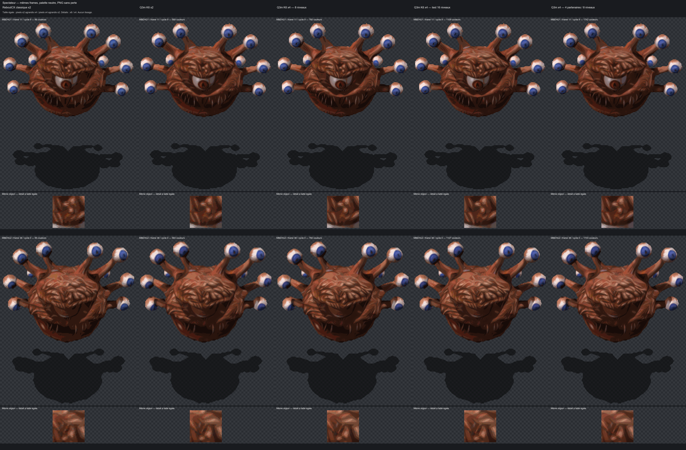
From test bench to the complete fighter
Technical dependencies, not a ritual. Each phase produces new versions; nothing historical is rewritten; no validation is inferred from an installation.
Go from “it works on 120 images in a script” to “it works in the game, for the whole character”, without skipping steps.
The three studies each proposed an order of work. The final version orders the tasks by what each one needs in order to start.
Nine phases, each with its exit criterion. The most important is P3: show the method in game, on one armour, one helmet, one shield and one sword, before any mass production.
| Phase | Work | Move on when | State on 4 October |
|---|---|---|---|
| P0 | Oracles: complete BAM reader, MPALETTE realisation, corrected evaluation bench (sign, separate masks, aggregations)Trustworthy reference tools: read the files, recompute colours like the game, measure without the sign error. | exact realisation; E3b reproduced | Done · oracles and corrected evaluation |
| P1 | K-palette inference; Q6 / Q3m encoder; 10 disjoint palettes; K = 3/4/6Redo the experiment at scale and cleanly, with ten truly new test palettes. | Q3m beats Q0 on every new palette | Done · K6, ten disjoint validations |
| P2 | DLL: V6 reader, mask, F plane, LUT; Python / C++ golden testsTeach the module the new format. “Golden tests”: reference cases whose result is known down to the byte. | V6 pixels without fractions = V5 pixels, not identical files | Implemented · 32,832 Python/C++ reference I/F pairs |
| P3 | In game: CHFF4 + a helmet, a shield, a sword, Q0 vs Q3mThe first real test: old and new methods side by side, in the game. | explicit validation by the user | Accepted within the initial in-game trial scope |
| P4 | Real zoom; x2 / x4; area downscaling or mipmaps | dated decision | Decided on 2 October · x2 + BOX, no mipmaps |
| P5 | Q3m ↔ constrained Q8 ablationWith and without boundaries, all else being equal: are they worth their complexity? | own gain visible and measured | Dropped without implementation or Q8c ablation |
| P6 | Complete 0x6110: 628 BAM, CHFF4 → CHFB1–3 → frequent weapons → shields → helmets | no missing frame; costs measured | Produced · 656 BAMs / 178,360 index frames |
| P7 | Paperdolls CHFF*INV, WPN*INV/OIN | clean interface measurements | Accepted · 81 normal BAMs / 163 frames, Nearest UI |
| P8 | The 78 Character animations, then other profilesGeneralising to monsters requires suitable classes and partners; see V7. A fixed palette does not eliminate the shading problem. | evidence per family | 78 Character animations produced and installed; QA limited to established scopes |
Commands
C:MoveToArea("AR0700") then C:CreateItem("PLAT01"), HELM01, ISHLD03, BDSW1H06, SW2H01, BOW01… Game and InfinityLoader closed to install.
Recolouring and layers
One channel at a time; two fighters with opposite colours; off-hand weapon recoloured by 0x1R then 0x2R; 9 directions + 7 mirrored.
Identical to native
Pulsing glow of BDSW1H06, pause grey, invisibility, petrification, night, selection, occlusion, 59–60 FPS.
The last reviewer's view
Claude Opus 5.5, after the two cross-reviews, 5.6 SOL's synthesis and the final review.
A signed opinion, not a proof: that of the model that did the last check. It separates what is certain, what is not, what should be done right away and what should definitely not be done.
Certain
- The bottleneck is the 12-level discretisation, not the choice of candidates.
- The point of action is the existing IEE compositor: it already has each layer's real palette.
- Any solution stays expressed as range indices, never as baked-in RGB (colours painted once and for all).
- A recipe learned under a single palette does not generalise.
Uncertain
- How well it holds on truly new palettes: only one is today.
- The boundaries' own gain, small on E3b.
- The real cost of the format under XPRESS, the module's compression.
- The zoom range and the value of x4.
- No measurement says what is beautiful: everything is judged in game.
Do now
- Build the corrected bench and 10 disjoint palettes: a few hours, and the generalisation question is settled.
- Code the V6 reader with the “V6 without planes = V5” test.
- Show Q3m in game on CHFF4 before any large-scale production.
- Measure the minimum and maximum zoom.
Not recommended
- Modifying
MPALETTEor equalising the ramps. - Switching to BAM V2 or baked RGBA, i.e. pre-coloured images.
- Adopting Q8 without ablation, or dithering by default.
- Launching the 628 BAM with a recipe not validated in game.
The open questions have progressed
The corrected evaluation and ten disjoint palettes were completed; K6 was selected. The V6 reader is implemented and checked against Python references. Q3m was shown in game. XPRESS_HUFF compression and actual zoom were measured, then x2 + BOX was recorded as the choice. Q8c was dropped without ablation.
The signed opinion remains the one from 30 September. Beauty remains a visual judgement; other families and contour experiments need their own acceptance.
Contents and sources
Original studies remain in sprite/Etudes_Sprite_codex_claude/. Later development evidence also lives in 6110 family research, docs/measurements/, pipeline/ contracts and sprite/index/qa-decisions/. Historical runs retain their dated state; the links below document later work.
All the work is kept, including the versions that contained errors: that is what lets anyone retrace the path and check. No study file is rewritten; a correction produces a new version. The technical presentation of 30 September thus replaces Opus's presentation of the 29th, and this page is its explained version. The study documents are written in French.
The “identities” are SHA-256 fingerprints: a string that changes as soon as a single byte of the file changes. They make it possible to check that everyone is talking about the same program, the same colour chart and the same network.
References added for this update
- Definitive development guide
- P1: K6 selection, fidelity, temporal evaluation and compression
- P2: V6 reader and native checks
- P4: x2 + BOX decision
- P7: complete paperdolls, UI path
- 78 Character animations: production and installation
- Family extension and deduplication
- Embedded video comparison provenance
Evidence files are not rewritten to follow later states. For example, P1 may still say “P2 to implement”: that was its state at the experiment’s date. Later work has its own references.
Why not something simpler?
The shortcuts that come to mind, and why each one was discarded or postponed. Answers drawn from the guides' “discarded options” tables.
Why not ship nice HD images already in colour?
You would need one per colour combination, and players have thousands. A pre-painted image (baked RGBA, BAM V2) destroys customisation and no longer reacts to spells or lighting, which also go through the palette.
Single pre-coloured RGBA / BAM V2-PVRZ: rejected. Literal fixed RGB colours: rejected.Why not add shades to the game's colour chart?
MPALETTE is shared by the whole game: changing it would change every character, every item and every mod at once. And there is no free slot on the body: all 252 useful numbers follow a colour choice.
Why no dithering, like on old consoles?
Tested. The fixed checkerboard shows on the large plates and raises the error by 6 to 10%; error diffusion doubles the flicker; renewed noise moves 30% of the pixels of an image that is standing still. Sub-shades do better, with no pattern.
Global Bayer: rejected by default. Error diffusion: rejected. Temporal noise: forbidden.Why not tune everything on a single palette?
Because the network shades differently depending on the colours. Tuned under the reference palette alone, a method excels there (error 16.3 vs 26.5 for the current method) but gains only 5% on the others: that is overfitting. And it is the players who choose their colours.
Q3 / single-palette interpolation: rejected as the final solution.Why keep xBR if the network does better?
xBR remains sharp, deterministic and useful as a guide for indices, classes, transparency and outlines. Its historical acceptance is retained. The later selected shading path is Q3m K6: the network provides targets, then pixels are re-encoded to stay recolourable. The older Auto / Full xBR / Full ReboutCX choices describe an installer proposal, not a published interface verified here.
Why not compute everything on the graphics card?
Colour reconstruction and compositing remain on CPU with native palettes and caches. BOX does use a shader to filter the texture for display. That filtering is separate from full GPU reconstruction of indices and palettes, which was not adopted.
Immediate full shader: postponed. Second EEex hook: rejected, the IEE capture point exists.Why x2 by default if x4 is finer?
An x4 texture contains four times as many pixels as x2. Q3m trials retained x2 with BOX: less compositing and upload work, and a look judged more natural. x4 can smooth some outlines further, but also look “plastic” without recovering details missing from the source. Its effects remain visible in comparisons, while the production preference is x2.
P4: x2 + BOX selected on 2 October.What if the network were shown a grey image, with no colours?
An open lead: having the network draw a colour-independent “shade map” would avoid rerunning it for each palette. The risk: losing the contrasts between materials that colour signals to it. Not tested yet; to be compared with Q3m.
Grey shade map: to be tested.What about monsters?
A fixed palette does not guarantee that neighbouring indices form usable gradients. V7 selects four profile-appropriate partners while retaining native colours. Fifteen profiles have a witness; Ogre, Flying and Ankheg have complete installed production with separate QA states. The established Character V6 is retained. V8 alpha trials are separate work.
Palette profile and partners per family; no automatic transfer of QA.BOX during production and BOX on screen: the same step?
The averaging principle is similar, but the roles differ. During production, the network’s x4 RGB targets are reduced in floating point before x2 encoding. On screen, the shader averages the reconstructed texture over the screen pixel’s covered area. I/F indices are never averaged to downscale them.
Why do paperdolls keep Nearest?
The inventory figure uses a UI path separate from world rendering. Its 6110 batch was accepted at x2 with Nearest, preserving centres, lookups and native shadow. The world’s BOX choice does not replace that UI setting.
The jargon, explained
In the sense this page uses it. Words underlined with dots in the text link here.
- Ablation
- An experiment where one ingredient of a method is removed, all else being equal, to measure what it really contributes.
- Alpha
- A pixel's transparency. In the game's sprites, a pixel is either opaque or transparent; only the shadow is semi-transparent.
- BAM
- The format of the game's animation files: images (frames) grouped into cycles, with a table of 256 colour numbers. The file name gives the layer and the action (
CHFF4G11: plate body, walking). - Bit, “3 bits”
- A bit is 0 or 1. Three bits give 8 values (0 to 7): hence the eighths of a shade.
- Channel, colour range, ramp
- A channel is one of a character's seven colour slots (metal, minor, major, skin, leather, armour, hair). The colour range, or ramp (also called a gradient), is the series of 12 shades from light to dark assigned to it: one row of
MPALETTE. - Class
- A pixel's material: one of the 7 ranges, one of the 21 blends of two ranges, or one of the four special cases (transparent, shadow, two reserved blacks).
- CRE, ITM
- Game files describing a creature and an item. Among other things, they hold the imposed colours.
- Disassembly
- Translating the game's program, a sequence of machine instructions, into a readable form, to learn what it really does. Addresses written as RVA locate a routine within the program.
- Dithering (Bayer, error diffusion)
- Faking an intermediate tone by alternating two neighbouring tones: following a fixed checkerboard (Bayer) or by pushing the rounding error onto neighbouring pixels (error diffusion).
- DLL, module, IEE runtime
- The project's module (InfinityEngine-Enhancer), a DLL file loaded by the game that builds the HD image during play. “Runtime”: what happens while the game is running.
- False colour
- The paint-by-numbers technique: the file carries numbers, the game supplies the colours. The garish working colours stored in the file are nicknamed “clown” colours.
- Frame, cycle
- A frame is one image of an animation; a cycle, a complete animation seen from one angle.
- Index
- The number, from 0 to 255, carried by each pixel of the sprite.
- Inference
- One run of the neural network on an image.
- Interpolation, fraction
- Computing an intermediate value between two known ones. Here, a colour F eighths of the way between two neighbouring shades.
- K
- Number of tuning palettes: K3 in E3b; K3/K4/K6 compared in P1; K6 selected with ten disjoint validation palettes.
- Layer, cell
- Body, weapon, shield or off-hand, helmet: drawn separately, each with its own palette, then stacked.
- LUT
- A precomputed look-up table. Instead of redoing a calculation for each pixel, it is done once for every possible value, then the table is read.
- Mipmap
- Reduced texture copies (half, quarter…), used according to on-screen size. The tested x4 mode regenerated levels after recompositing. The Character x2 + BOX choice uses no mipmaps.
- MPALETTE.BMP
- The game's colour chart: 256 rows of 12 colours.
RANGES12.BMPis an identical copy, but the engine only readsMPALETTE. - Nearest neighbour
- Display without smoothing: each screen pixel takes the colour of a single image pixel. Sharp, but it can “skip” pixels when shrinking (aliasing). It is the baseline setting for quality checks.
- OKLab, ΔE
- OKLab is a way of scoring colours where the distance between two scores follows the difference perceived by the eye. ΔE is that distance. A gap of around 0.01 to 0.03 starts to be visible.
- Opcode
- An effect number in the game's files. Opcode 7 changes a channel's colour.
- Overfitting
- When a method fits its tuning examples so closely that it gets the others wrong.
- Palette, realised palette
- The table that assigns a colour to each index. The realised palette is the one the game has just computed for a layer, effects included.
- Palettisation, quantisation
- Converting an image with free colours (the network's) into indices of a limited palette.
- Paperdoll
- Large inventory figure, with its own BAMs and UI path. The normal 6110 batch (81 BAMs, 163 frames) was accepted at x2 Nearest.
- QA
- Quality assurance: here, the in-game check by the project author. No QA can be inferred from a measurement or an installation.
- ReboutCX
- The x4 upscaling neural network used by the project (RRDBNet architecture, 16.7 million parameters).
- Registry V5, V6
- HD sprite storage formats. V5 carries indices; implemented V6 adds fractions and dependencies. I/F remain u8. Without fractions, pixels match V5 but headers differ. V7/V8 extensions have distinct contracts.
- SHA-256
- A digital fingerprint: a string computed from a file, which changes as soon as a single byte changes.
- Sprite
- An animated image representing a character, a monster or an object in a 2D game.
- sRGB, linear light
- sRGB is the usual way colours are encoded on screen; linear light converts it into actual amounts of light. Blending in one or the other gives slightly different results.
- Tuning, validation
- Tuning palettes are used to adjust a method; validation palettes, set aside, check that it also works elsewhere.
- Upscale x2, x4
- Enlarging an image: two or four times as many pixels in each direction, i.e. 4 or 16 times as many pixels in total.
- Vanilla
- The original game, as shipped, without mods.
- xBR
- A classic pixel-art upscaling algorithm made of rules about neighbouring pixels. It invents no colour.
- XPRESS, zlib
- Two data compression methods. The game's module uses XPRESS; the study's sizes were estimated with zlib, hence their indicative nature.
- BOX
- Area averaging. During production: reduce RGB targets before encoding. On screen: average covered texels, weighted by overlap and alpha.
- Texel, minification
- A texel is a texture pixel. Minification reduces the texture on screen; magnification enlarges it. Filters must account for both cases.
- Premultiplied alpha
- RGB multiplied by alpha during filtering so invisible pixels do not contribute black at the edges.
- V7, partner B
- Four profile-allowed colour partners selected by B, with eight fractions F. This B is not the old Q8 boundary plane.
- V8, coverage A
- Optional alpha multiplier for a contour trial; Q3m colours retained. Installation does not establish visual acceptance.
- Deduplication
- Reuse computations for identical pixels and contracts. Centres and cycles remain stored per occurrence.